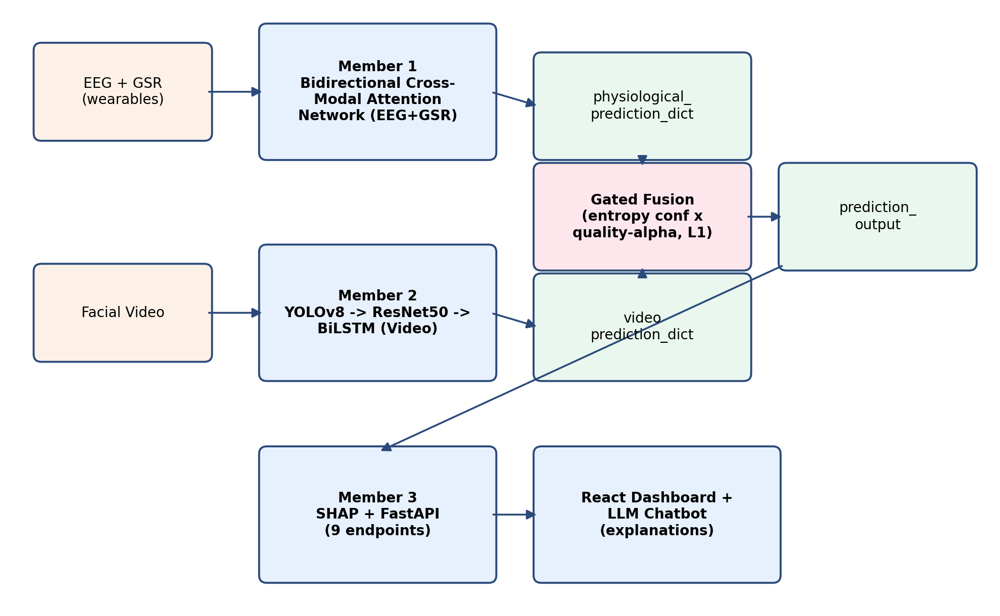
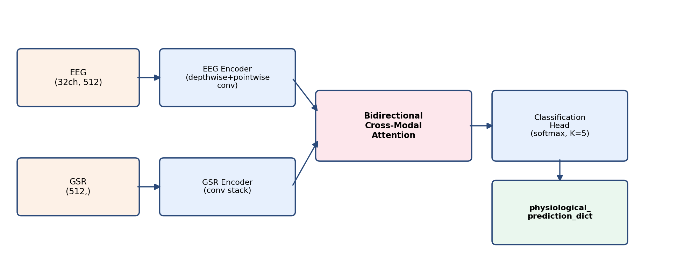
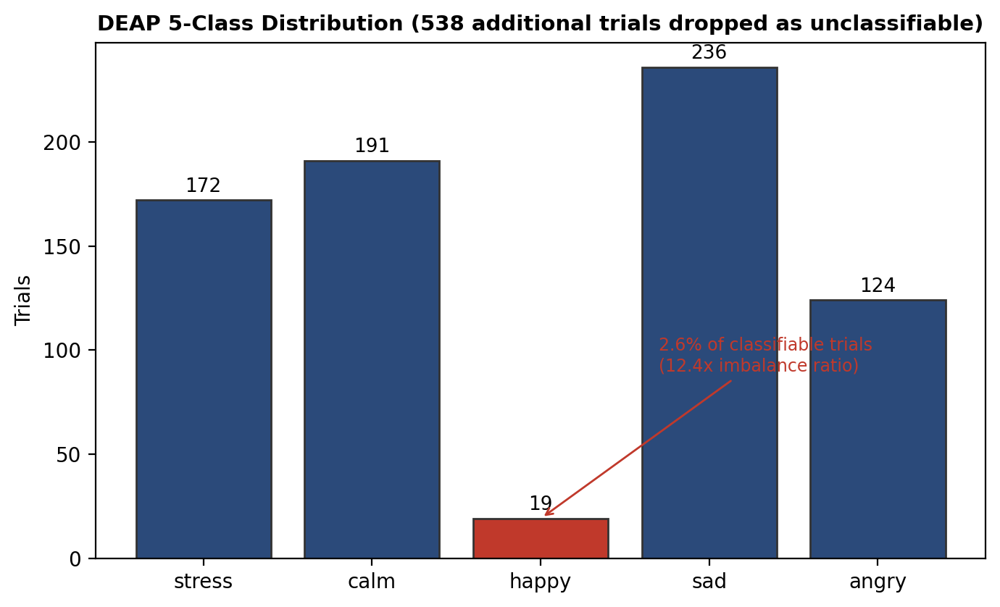
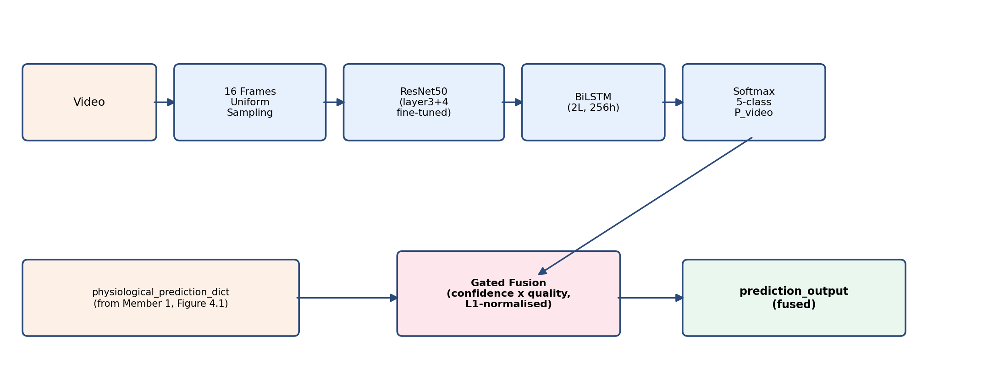
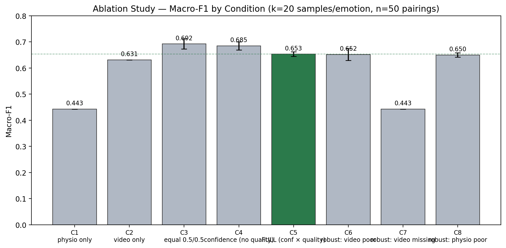
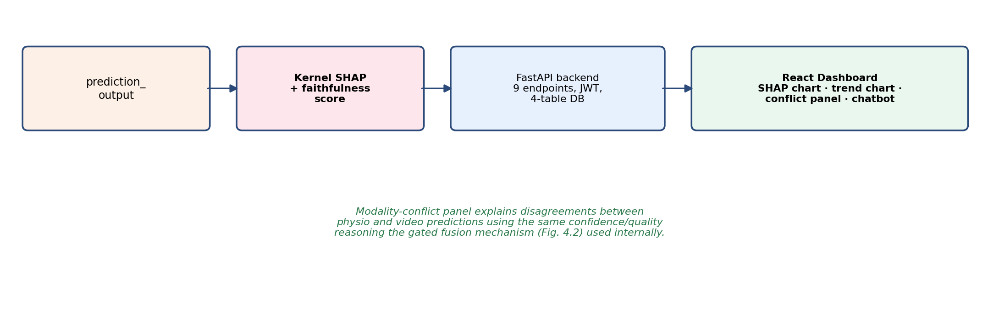
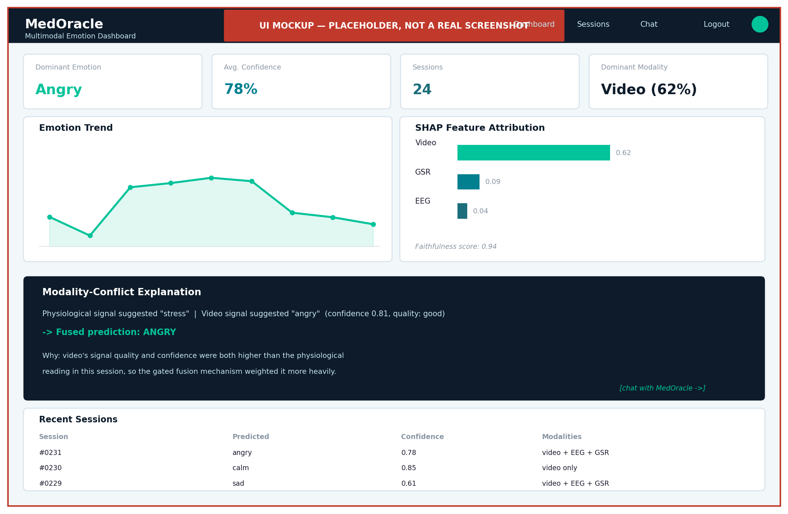

MedOracle demonstrates a working, honestly-evaluated multimodal emotion recognition system. Its quality-aware gated fusion significantly outperforms any single modality and degrades gracefully when a sensor is unreliable — precisely the scenario a real deployment must handle. Where a component (the physiological module, under strict subject-independent evaluation) falls short, this project treats that as a rigorously diagnosed finding rather than a hidden weakness, and shows the system is explicitly designed to remain robust to it.